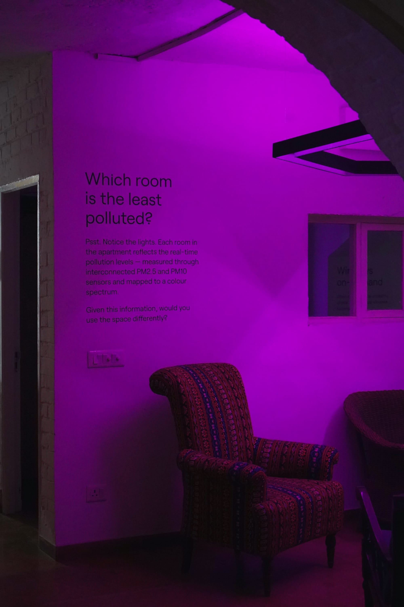

My house is ill!
Overview
‘My house is ill!’ is an immersive installation that visualises how air pollution resides in indoor environments like our homes. Housed within an apartment at the Khoj Studios in Delhi, the project exists at the intersection of architecture, new media and ecology — studying air pollution micro-climates within indoor environments to investigate patterns that are otherwise unseen.
Funded by
Khoj International Artists' Association and Prince Claus Fund


Very little is known about how pollution alters the safety of spaces we inhabit every day. While status updates about outdoor air are available through public information boards and hand-held apps, how we might protect ourselves in our own homes is far less obvious. The house imagines a very-near reality of how our domestic environments could evolve in response to persistent pollution outside the window — prompting visitors to think about everyday questions about the air in our homes.


Live dashboard displaying the current air quality conditions within the flat


The project is conceived by Architecture for Dialogue in collaboration with Salil Parekh. The current iteration of the project is supported by Khoj and forms a part of “Does a Blue Sky Lie? : Testimonies of Air’s Toxicities,” a project undertaken to explore the troubled ecology of Delhi’s air. The month-long texhibition is a satellite event to the 13th India Art Fair.